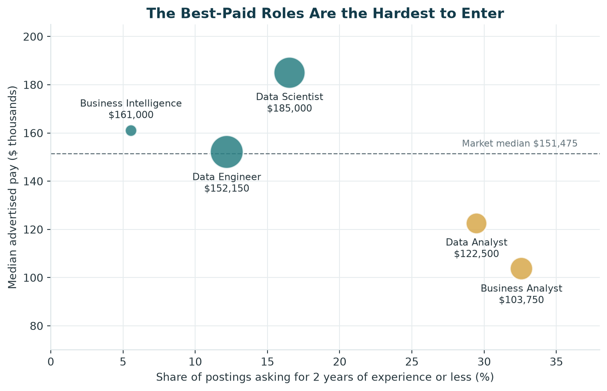

Final Recommendations for Analytics Careers in Computer Systems Design
Purpose
The earlier pages describe the market, measure our skills against it, and model what separates higher-paying postings. This page turns that evidence into recommendations. It answers the product question set on the Project Overview page: how an aspiring analytics professional should evaluate opportunities in Computer Systems Design and Related Services (NAICS 5415), and which skills and experiences to put first.
The recommendations are written for the target user: a student, recent graduate, or early-career professional. Each one names the evidence behind it and the page where that evidence is shown.
TipThe Short Version
Enter through Business Analyst or Data Analyst roles.
Learn SQL first, then Python.
Add statistical modeling as the skill for moving up in pay.
Search by skills and across titles, not by one job title.
Treat location as a pay factor, and use remote and hybrid roles if relocating is not an option.
How the Roles Compare
A job seeker choosing a target role is weighing three things: how many openings there are, what they pay, and whether an early-career candidate can get one. The table puts those side by side for the five role families in our 1,790 postings.
Show code
table = pd.DataFrame( {"Postings": roles["Postings"].map("{:,}".format),"Median pay": roles["Median pay"].map(money),"Median years asked": roles["Median years asked"].map("{:.0f}".format),"Asks 2 years or less": roles["Entry share"].map(pct),"Remote or hybrid": roles["Remote or hybrid"].map(pct),"Postings with pay": roles["Postings with pay"],"Postings with experience": roles["Postings with experience"], })table.index.name ="Role family"table.reset_index().style.hide(axis="index")
Table 1: Demand, pay, accessibility, and flexibility by role family. Pay and experience are calculated only from the postings that state them.
Role family
Postings
Median pay
Median years asked
Asks 2 years or less
Remote or hybrid
Postings with pay
Postings with experience
Data Engineer
615
$152,150
5
12%
41%
196
197
Data Scientist
552
$185,000
5
17%
41%
203
121
Business Analyst
292
$103,750
3
33%
45%
88
89
Data Analyst
250
$122,500
3
29%
35%
74
95
Business Intelligence
81
$161,000
5
6%
56%
30
18
Show code
fig, ax = plt.subplots(figsize=(8, 5.2))entry_roles = roles.index.isin(["Business Analyst", "Data Analyst"])ax.scatter( roles["Entry share"], roles["Median pay"] /1000, s=roles["Postings"] *1.6, color=[GOLD if e else TEAL for e in entry_roles], alpha=0.85, edgecolor="white", linewidth=1.5, zorder=3,)for name, row in roles.iterrows(): radius = (row["Postings"] *1.6) **0.5/2 above = name =="Business Intelligence"# keeps its label clear of the median line ax.annotate(f"{name}\n{money(row['Median pay'])}", (row["Entry share"], row["Median pay"] /1000), xytext=(0, radius +3if above else-radius -3), textcoords="offset points", ha="center", va="bottom"if above else"top", fontsize=9, color=TEXT, )ax.axhline(median_salary /1000, color=GRAY, linewidth=1, linestyle="--", zorder=1)ax.text(36.5, median_salary /1000+2, f"Market median {money(median_salary)}", ha="right", va="bottom", fontsize=8.5, color=GRAY)ax.set_xlabel("Share of postings asking for 2 years of experience or less (%)", color=TEXT)ax.set_ylabel("Median advertised pay ($ thousands)", color=TEXT)ax.set_xlim(0, 38)ax.set_ylim(70, 205)ax.grid(color=GRID, linewidth=0.8)ax.set_axisbelow(True)ax.spines[["top", "right"]].set_visible(False)ax.spines[["left", "bottom"]].set_color("#D9E2E5")ax.tick_params(colors=TEXT)ax.set_title("The Best-Paid Roles Are the Hardest to Enter", color=NAVY, fontweight="bold", fontsize=13)plt.tight_layout()plt.savefig(FIGURES /"role_pay_vs_access.png", dpi=200, bbox_inches="tight", facecolor="white")plt.show()

Figure 1: Pay against accessibility for each role family. Circle size shows the number of postings. Roles further right are more open to early-career candidates; roles higher up pay more. Gold marks the two recommended entry roles.
The pattern is a trade-off. Data Scientist and Data Engineer roles are the largest groups and pay at or above the market median, but they usually ask for five years of experience. Business Analyst and Data Analyst roles pay less and are the most open: about three in ten of their postings that state a requirement ask for two years or less.
Business Intelligence looks attractive on pay and flexibility, but it is the smallest group. Its pay figure rests on 30 postings and its experience figure on 18, so we treat it as a direction to grow into rather than a first target.
Recommendations
1. Enter through Business Analyst or Data Analyst roles
Evidence. Across all postings that state a requirement, the median is five years and only 19.6% ask for two years or less (Market Baseline). The share is 33% for Business Analyst and 29% for Data Analyst roles, against 17% for Data Scientist and 12% for Data Engineer roles.
What to do. Aim first applications at Business Analyst and Data Analyst postings, and treat Data Scientist, Data Engineer, and Business Intelligence roles as the second step. These entry roles also match what an early-career candidate tends to have already: on the Skill Gap Analysis page, business requirements, business analysis, Excel, and communication were the skills where our team already meets the market.
The cost. The entry roles pay less. Business Analyst postings have a median of $103,750 and Data Analyst postings $122,500, against a market median of $151,475. The next two recommendations are about closing that distance.
2. Learn SQL first, then Python
Evidence. Python appears in 62.5% of postings and SQL in 61.8%, roughly three times as often as the next skill. They are also the two highest-priority gaps for our team (Skill Gap Analysis). Both carry positive coefficients in the pay model, so they are associated with higher-paying postings as well as with more of them (Predictive Modeling).
What to do. Start with SQL. It is the one skill every role family asks for, from 36% of Business Analyst postings to 80% of Business Intelligence postings, so it pays off whichever role a candidate ends up in. Python comes second because its value depends on the role: it appears in 82% of Data Scientist postings but only 14% of Business Analyst postings. A candidate targeting business analyst roles can reach interviews on SQL alone; a candidate targeting data science cannot.
3. Add statistical modeling as the skill for moving up in pay
Evidence. The Predictive Modeling page found that the most requested skills are not the best-paid ones. Statistical Modeling appears in only 6.4% of postings, yet it carries the largest positive coefficient in the model, and postings that list it have a median $63,100 higher than those that do not. Power BI is requested more often and is associated with lower advertised pay.
How we reconcile this with the skill-gap targets. Our skill-gap targets were set from how often a skill is requested. The model shows that frequency and pay measure different things, so we now read them as two separate questions:
Question
Measure
Skills it points to
What gets a candidate considered?
Share of postings requesting the skill
SQL, Python, data pipelines
What moves a candidate toward higher pay?
Association with above-median pay
Statistical modeling, Python, SQL
What to do. Keep the frequency-based plan for the first stage, because a candidate has to be considered before pay matters. Then add statistical modeling ahead of further BI tool certifications. Power BI and Tableau remain worth knowing for Business Intelligence and Business Analyst roles, where they are requested often, but the evidence does not support treating another BI certification as a route to higher pay.
This is an association in one year of postings, not proof that learning a skill raises an individual’s pay. Statistical Modeling appears on only 33 postings with pay, so the size of the difference is imprecise.
4. Search by skills and across titles, not by one job title
Evidence. Role family alone identified above-median postings 59% of the time. Adding skills, location, education, and work arrangement raised that to 78% (Predictive Modeling). The source data also groups titles broadly: a posting titled Data Analyst or Data Engineer may be classified under Data Scientists or Database Architects (O*NET OnLine (2026)). Earlier research on analytics job advertisements found the same overlap, with business analyst, data analyst, and data scientist roles sharing a core of skills (Verma et al. (2019)).
What to do. Search on skill keywords such as SQL, Python, and statistical modeling, and include all five titles: Data Analyst, Business Analyst, Business Intelligence Analyst, Data Scientist, and Data Engineer. Read the skills list before the title when deciding whether a posting is worth an application, since the skills say more about the pay level than the title does.
5. Treat location as a pay factor, and use remote and hybrid roles
Evidence. California carries the largest positive coefficient of any non-skill feature in the pay model. Its postings have a median of $210,000 across 127 postings with pay, against $151,475 for the market. California, Virginia, New York, and Texas lead on volume (Market Baseline). Remote and hybrid postings make up 41% of the dataset, and where pay is stated they sit close to the market: a median of $147,500 for remote and $145,850 for hybrid postings.
What to do. A candidate who can relocate should weigh California’s higher advertised pay against its cost of living, which this dataset does not measure. A candidate who cannot relocate should include remote and hybrid postings in every search. The data does not show a pay penalty for them.
Applying the Strategy to Our Team
The three of us are examples of the target user, each with a different target role. The priorities below combine each member’s role-specific gaps from the Skill Gap Analysis page with the pay findings above.
Member
Target role
First priority
Next
Entry point
Jenna
Business Intelligence / Business Analyst
SQL, from Beginner to Advanced
Business requirements, then Python
Business Analyst postings, moving to Business Intelligence with experience
Mariam
Business Analyst
SQL
Business analysis and Excel
Business Analyst postings directly
Juan
Data Analyst, moving toward Data Scientist
Python and machine learning
Statistical modeling
Data Analyst postings, moving to Data Scientist
Jenna. SQL appears in 45% of her target postings and is her largest gap. Her BI tool skills already meet the target for these roles, so more time on Power BI or Tableau would add little. Business Intelligence postings usually ask for about five years, which is why Business Analyst is the entry point.
Mariam. Her target role is the most accessible of the five. SQL is the clear first step. Python appears in only 14% of Business Analyst postings, so it can wait until SQL, business analysis, and Excel are in place.
Juan. He has the smallest gaps and the highest-paying target. Statistical modeling is the skill most associated with higher pay and one of his lowest ratings, so it belongs in his plan alongside Python and machine learning.
Action Plan
The timeline follows the twelve-week study plan in Section 4 of the Skill Gap Analysis page and extends it to the job search.
When
Skills
Job search
Weeks 1 to 4
SQL and Python foundations
Build a list of target postings across all five titles; note which skills recur
Weeks 5 to 8
Data pipelines; BI tools for members with gaps there
Rewrite the résumé around skills rather than titles, leading with business strengths
Weeks 9 to 12
Machine learning basics and statistical modeling
Publish one portfolio project that uses SQL, Python, and a model, such as this site
After week 12
One certification matched to target role
Apply to Business Analyst and Data Analyst postings, including remote and hybrid
First one to two years in role
Deepen statistical modeling and Python on the job
Move toward Data Scientist, Data Engineer, or Business Intelligence roles
Limitations
Advertised pay only. Salary is stated on 591 of 1,790 postings. The pay comparisons describe employers who publish pay.
Experience is stated on a minority of postings. The accessibility figures use the 520 postings that give a minimum. Missing experience was not treated as zero.
Small groups. Business Intelligence has 81 postings, and the statistical modeling finding rests on 33.
Associations, not causes. The model shows which features go with higher-paying postings. It does not show that acquiring a skill or moving to a state would change an individual’s pay.
Postings are not hires. The data shows what employers advertise, not who they hire or what they finally pay.
No cost of living. Pay differences between states are not adjusted for living costs.
One industry, one year. The recommendations apply to analytics roles in NAICS 5415 from September 2025 to September 2026.